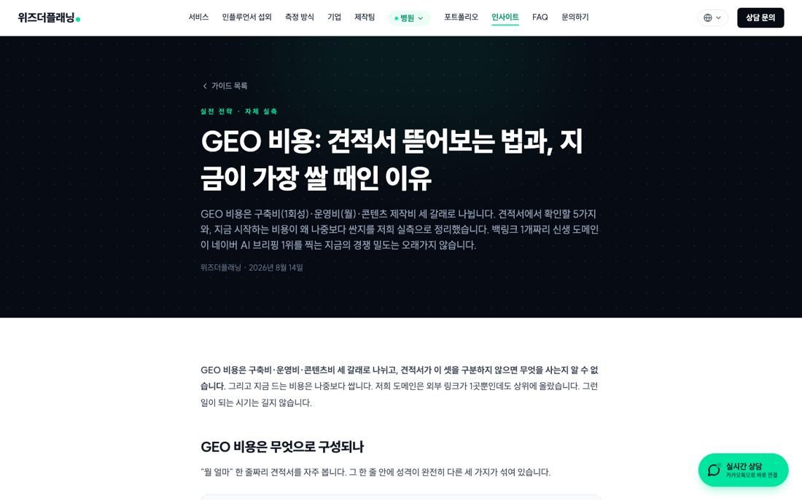
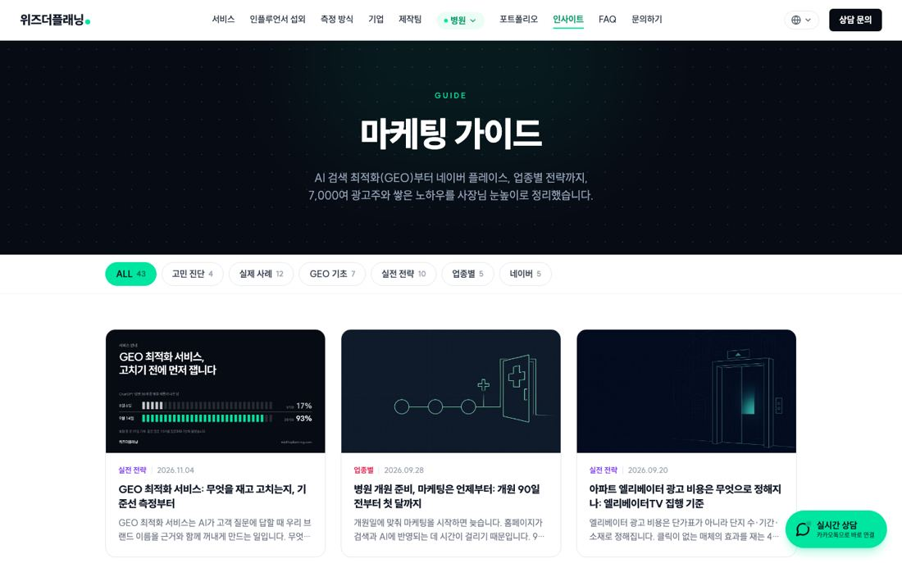
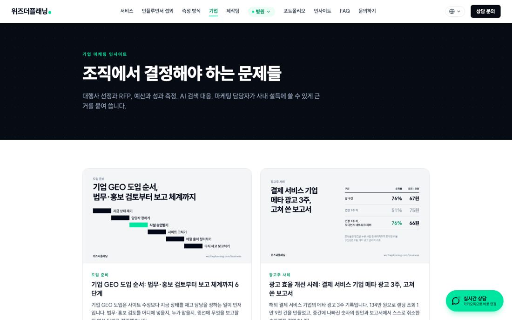
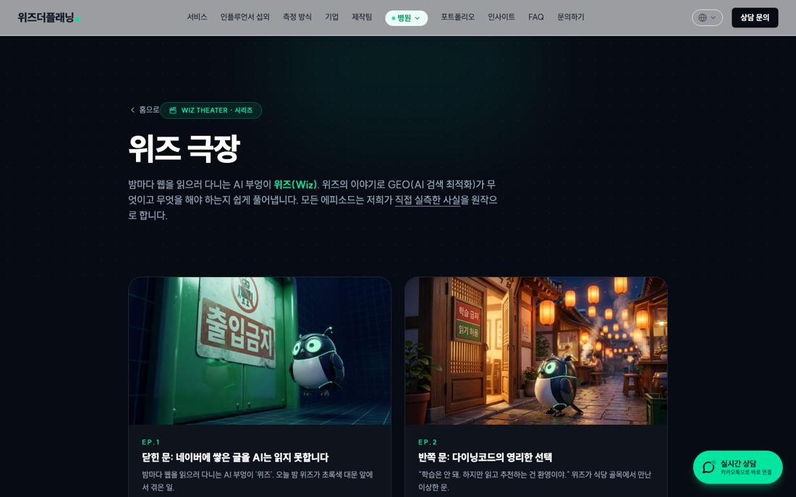

바꿀 쪽은 네 묶음입니다
칼럼 글 43편은 모두 같은 틀 부품 하나(GuideArticle)를 씁니다. 그 부품만 바꾸면 43편이 한꺼번에 새 디자인이 됩니다. [실측: 43편 전부 같은 부품 사용]
| 쪽 | 개수 | 지금 | 바꿀 곳 |
|---|---|---|---|
| 마케팅 칼럼 목록 /guide | 1 | 옛 머리글·바닥글, 초록 필터 단추 | 목록 쪽 + 카드 격자 |
| 마케팅 칼럼 글 /guide/… | 43편 | 검은 머리 칸, 초록 링크·강조 상자·글 아래 상자 | 글 틀 부품 하나. 본문에 초록을 직접 적은 9편은 파랑으로 같이 |
| 기업 인사이트 /business/insights | 목록 1 + 7편 | 옛 머리글, 기업용 글 틀 | 기업 글 틀 부품 하나 + 목록 |
| 위즈 극장 /theater | 목록 1 + 7편 | 옛 머리글, 어두운 극장 꾸밈 | 머리글·바닥글만 새 것으로, 극장 분위기 그림은 유지 |
글 쪽: 검은 머리 칸 대신 상세 쪽과 같은 코발트 첫 칸
서비스 상세 쪽과 같은 흰 머리글, 코발트 첫 칸(위치·분류·제목·한 줄 요약), 흰 본문으로 맞춥니다. 본문 글자는 그대로 두고 링크·강조 상자 색만 파랑으로 바꿉니다. 글 끝 「이어서 읽기」는 홈 43번 컷의 글 카드 모양을 씁니다.

옛 머리글(초록 「병원」 단추), 검은 머리 칸, 초록 링크
GEO 비용: 견적서 뜯어보는 법, 지금이 가장 쌀 때인 이유
GEO 비용은 구축비·운영비·콘텐츠 제작비 세 갈래로 나뉩니다.
글 아래 상자의 행선지는 지금 그대로(기업 → 제안 요청, 병원 → 병원 진단). 바꿀지는 아래 「정할 것」 1번
목록 쪽: 홈 43번 컷과 같은 말투로
첫 칸 제목은 홈 43번 컷 문장(「저희가 직접 재고 쓴 글입니다.」)을 그대로 이어 씁니다. 분류 단추는 네모난 파랑 단추로, 카드는 지금 표지 그림을 그대로 쓰고 모서리와 글자만 새 디자인으로 맞춥니다.

「마케팅 가이드」 검은 칸, 초록 둥근 분류 단추, 문구 「사장님 눈높이로」
저희가 직접 재고 쓴 글입니다.
AI 검색·네이버·업종별로 직접 측정한 기록만 올립니다.
분류·글 수·날짜는 지금 글 목록(lib/guide-articles.ts)에서 그대로 읽습니다
기업 인사이트·위즈 극장

기업 경로 규칙은 그대로 지킵니다: 자영업 글로 가는 링크 없음, 위 홍보 띠 없음, 「사장님·가게」 대신 「담당자·브랜드」

극장 포스터·어두운 무대 분위기는 이 시리즈의 얼굴이라 남기고, 머리글·바닥글만 새 것으로
바뀌지 않는 것
- 주소 전부(/guide/…, /business/insights/…, /theater/…). 바꾸면 검색과 AI 인용이 끊깁니다
- 글 본문, 제목, 검색 설명, 구조화 데이터(Article·FAQPage), 사이트맵 날짜. 껍데기만 바꾸므로 「수정일」을 올리지 않습니다
- 사례 글의 사업자 인증 열람 상자(CaseAccessRequest)와 그 동작
- 글마다 H1 하나(글 틀의 제목). 본문 안 H2·H3 계층
옮길 순서와 확인 방법
- 1. 칼럼 글 틀(43편이 한꺼번에)새 머리글·코발트 첫 칸·파란 링크·강조 상자·이어서 읽기·글 아래 상자. 확인: 43편을 넓은 화면·휴대폰으로 전부 찍어 한눈표로 보고, 바꾸기 전후 구조화 데이터와 H1 수를 기계로 대조
- 2. 칼럼 목록 /guide분류 단추·카드 격자. 확인: 분류마다 눌러 글 수가 지금과 같은지
- 3. 기업 인사이트 목록 + 7편확인: 자영업 글로 가는 링크 0, 홍보 띠 0
- 4. 위즈 극장 목록 + 7편머리글·바닥글 교체, 포스터·영상 재생 확인
- 5. 미리보기에 올려 사장님 확인운영 사이트로 옮기는 건 사장님이 「운영으로 옮겨」라고 하실 때
정할 것 세 가지
그 밖 개선 아이디어
홈 45컷과 새 쪽을 넓은 화면·휴대폰으로 전부 찍어 보며 나온 것입니다. 점수는 10점 만점 기준 「지금 하면 얻는 것」이고, 사장님 할 일이 없는 것부터 적었습니다.
| 아이디어 | 왜 | 점수 | 누가 |
|---|---|---|---|
| 문의 메일 발송 횟수 제한 | 문의 폼에 자동 봇이 몰리면 대표 메일함이 막힙니다. 운영 옮기기 전에 넣어야 하는 남은 일입니다 | 9 | 클로드 |
| 첫 방문 검은 인트로 2.4초 줄이기(1.2초) 또는 없애기 | 움직임 줄이기와 같은 흐름. 첫 화면 전에 기다리는 시간이 깁니다 | 7 | 클로드 |
| 첫 화면 뒤 영상 8개 동시 재생을 4개로 | 휴대폰 데이터·배터리와 첫 화면 뜨는 속도. 화면 모양은 그대로 | 7 | 클로드 |
| 상담 신청 뒤 화면에 「다음에 일어나는 일」 안내 | 지금은 「신청을 받았습니다」 한 줄. 담당 마케터 연락·진단 순서를 같은 말로 보여 주면 불안이 줄어듭니다(시간 약속 숫자는 넣지 않음) | 6 | 클로드 |
| 오른쪽 아래 초록 「실시간 상담」 단추 정리 | 새 디자인의 아래 바·「문의 칸으로」 단추와 겹치고, 휴대폰 상담 쪽에서 동의 칸 글자를 가립니다 [실측]. 그 단추를 실제로 쓰시는지에 따라 숨기거나 아래 바 카카오와 합칩니다 | 8 | 사장님 결정 |
| 위플루언서 섭외 화면을 MCN 쪽에 넣기 | 캠페인 화면은 구글 로그인 뒤에만 보여 공개 캡처로는 로그인 단추만 나옵니다 [실측]. 사장님 크롬(로그인된 창)에서 찍고 광고주·크리에이터 이름은 가려서 넣을 수 있습니다 | 8 | 사장님 허락 |
| 영문·중문·베트남어 쪽 머리글을 새 디자인으로 | 한국어 쪽은 새 디자인, 외국어 쪽은 아직 따로입니다. 영문 법무 검토가 끝난 뒤가 맞습니다 | 5 | 사장님 결정 |